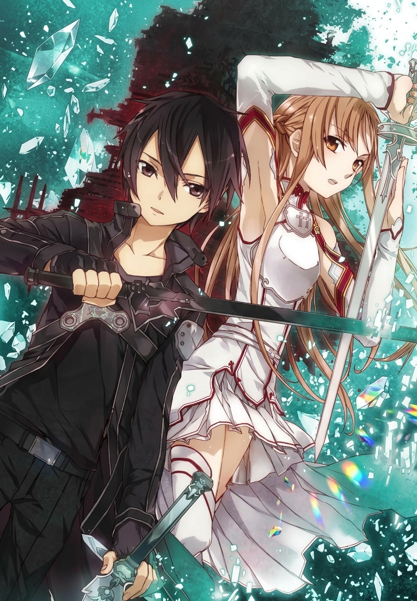
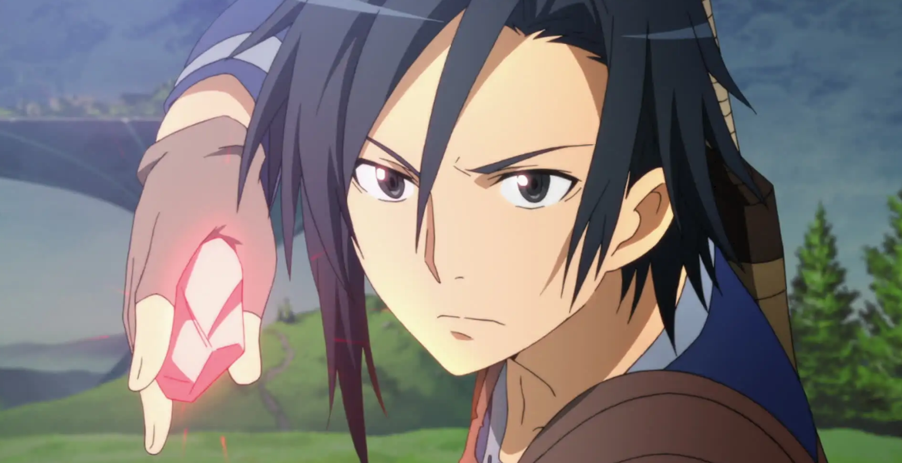

Sword Art Online
Thousands of players are trapped inside a virtual reality game, where dying in the game means dying for real.
Aincrad

A grey sword cut my shoulder.
The thin line at the top left corner of my field of vision shrank slightly. At the same time a cold hand passed over my heart.
The blue line -called the "HP bar"- was a visual rendering of my life force. There was still a little over 80% left. No, that phrase wasn't appropriate enough. Right now, I was about 20% closer to death.
I dashed backwards before the enemy's sword even began its attacking motion.
"Haaa..."
I forced a huge breath to steady myself. The <body> in this world didn't need oxygen; but the body on the other side, or rather the body lying down in the real world, would be breathing heavily. My limp hands would be soaked with sweat, and my heartbeat would be off the charts.
Of course.
Even if everything I saw right now was nothing more than a rendering of a 3D virtual reality, and the bar being reduced was nothing more than a bunch of numbers that showed my hit points, the fact that I was fighting for my life didn't change.
When you thought about it like that, this fight was extremely unfair. That's because the enemy in front of me -a humanoid with dully shining arms covered in dark green scales and a lizard's head and tail-was not a human, nor was it really alive.
It was a digital lump that the system would replace regardless of how many times it was killed.
-No.
The AI that controlled the lizardman was studying my movements and enhancing its ability to respond to them with every second that passed. However, the moment that this unit was destroyed, the data would be reset instead of being passed on to the unit that would regenerate in this area.
So in a sense, this lizardman was also alive, a single being unique to this world.
"...right?"
There was no way that it would have understood the word that I had muttered to myself, but the lizardman (a level 82 monster called «Lizardman Lord») hissed and smiled, showing the sharp fangs that protruded from its long jaw.
This was reality. Everything in this world was real. There was no virtual reality or fakery of any kind.
I shifted the one-handed long sword in my right hand to waist- height and watched the enemy.
The lizardman moved the buckler in his left hand forward and drew back the scimitar to his right.
A chill breeze blew into the shadowed dungeon and the flame of the torch shook. The wet floor softly reflected the flickering torch- light.
"Kraaah!!"
With a tremendous scream, the lizardman leapt. The scimitar drew a sharp arc as it flew towards me.
A blinding orange light lit its trajectory; a high-class one-hit sword skill of the curved sword, It was a formidable charge-type sword skill that covered a distance of 4 meters in 0.4 seconds.
But, I was already expecting the attack.
I had slowly increased the distance to lure the Al into creating this situation. I closed in on the lizardman, my mind registering the burning smell that the scimitar left behind as it sliced through the air merely centimeters before my nose.
"...Ha!"
With a short shout, I swung my sword horizontally. The sword, now covered in sky-blue light, cut through the thinly protected stomach and bright red light scattered instead of blood. There was a low scream.
However, my sword didn't stop. The system assisted me through the programmed movements and chained t he next slash with a speed that would normally have been impossible.
This was the most important element in battles within this world
The sword sped off right from left and cut into the lizardman's chest. In this state, I spun my body in a full circle and the third strike struck the enemy deeper than before.
"Raarrgh!"
As soon as the lizardman recovered from being stunned briefly because it failed to hit with a big skill, it screamed with rage or perhaps fear, and raised its scimitar high in the air.